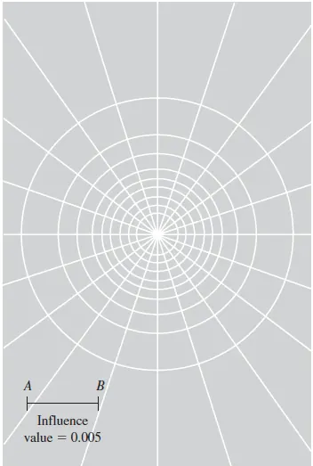

Distribución de esfuerzos verticales#
Importante
Objetivos de aprendizaje
Reconocer los supuestos de la teoría elástica aplicada a los suelos.
Calcular el incremento de esfuerzo vertical bajo cargas puntuales, lineales, de franja, circulares y rectangulares.
Aplicar el principio de superposición y la carta de Newmark.
Interpretar el bulbo de presiones y su relación con la profundidad de exploración.
La teoría elástica en geotecnia#
Para calcular asentamientos es necesario conocer cuánto aumenta el esfuerzo en el terreno por efecto de una carga aplicada en la superficie. Cuando los esfuerzos son pequeños respecto a la resistencia, en la parte inicial y aproximadamente lineal de la curva esfuerzo-deformación, se puede suponer que el suelo está en equilibrio elástico y aplicar las soluciones de la teoría de la elasticidad. Estas soluciones suponen un medio continuo, homogéneo, isotrópico y linealmente elástico, un semiespacio infinito. Ningún suelo real cumple estas condiciones, pero la distribución del esfuerzo vertical resulta poco sensible a ellas y las soluciones dan resultados razonables para el diseño.
Como las ecuaciones son lineales, se cumple el principio de superposición: el incremento de esfuerzo producido por varias cargas es la suma de los incrementos que produce cada una por separado. Esto permite construir la solución para áreas cargadas de cualquier forma a partir de soluciones elementales.
Carga puntual: solución de Boussinesq#
Boussinesq (1885) obtuvo el incremento de esfuerzo vertical a una profundidad \(z\) y a una distancia horizontal \(r\) de una carga puntual \(Q\) aplicada en la superficie:
El esfuerzo vertical no depende de las constantes elásticas del medio; solo depende de la geometría. Disminuye con el cuadrado de la profundidad bajo la carga y se dispersa lateralmente.

Figura 34 Esfuerzo vertical bajo una carga puntual. Fuente: Das (2001).#
Ejemplo resuelto: carga puntual
Una torre transmite una carga concentrada de 500 kN. Calcule el incremento de esfuerzo vertical a 3 m de profundidad, directamente bajo la carga y a 1, 2 y 3 m de distancia horizontal.
Bajo la carga (\(r=0\)): \(\Delta\sigma_z=3(500)/(2\pi\cdot9)=26{,}5\) kPa.
\(r\) (m) |
\(r/z\) |
\([1/(1+(r/z)^2)]^{5/2}\) |
\(\Delta\sigma_z\) (kPa) |
|---|---|---|---|
0 |
0 |
1,000 |
26,5 |
1 |
0,33 |
0,768 |
20,4 |
2 |
0,67 |
0,399 |
10,6 |
3 |
1,00 |
0,177 |
4,7 |
Bulbo de presiones#
Las curvas que unen los puntos de igual incremento de esfuerzo se denominan isóbaras, y el volumen que encierran forma el bulbo de presiones. Bajo una zapata cuadrada de ancho \(B\), el incremento de esfuerzo cae por debajo del 10 % de la presión aplicada a una profundidad de aproximadamente \(2B\); bajo una zapata corrida, a unos \(4B\). Esta zona es la que se ve afectada por la carga, y es la que debe investigarse en la exploración: la NSR-10 relaciona la profundidad mínima de los sondeos con el ancho de la cimentación y con la profundidad a la que el incremento de esfuerzo se vuelve despreciable.

Figura 35 Bulbo de presiones bajo una cimentación.#
El bulbo de presiones y la geología
El bulbo de presiones dice hasta dónde llega la influencia de la obra, y la geología dice qué hay dentro de ese volumen. Una zapata ancha o una losa de un edificio puede tener un bulbo que alcance un estrato compresible profundo, invisible para una exploración diseñada con zapatas pequeñas. En valles aluviales con lentes de turba o arcillas lacustres, esta es una causa clásica de asentamientos inesperados.
Otras geometrías de carga#
Integrando la solución de Boussinesq se obtienen expresiones para otras geometrías. Para una carga lineal \(q\) por unidad de longitud:
Para una franja de ancho \(B\) con presión uniforme \(q\), que representa una zapata corrida o un terraplén largo:
donde \(\alpha\) y \(\delta\) son los ángulos que definen la posición del punto respecto a los bordes de la franja. Bajo el centro de un área circular de radio \(R\):
Para un área rectangular de lados \(B\times L\), el incremento bajo una esquina se expresa como \(\Delta\sigma_z=q\,I\), donde el factor de influencia \(I\) depende de \(m=B/z\) y \(n=L/z\) [Das, 2001]:
Para calcular el esfuerzo en cualquier otro punto, el área se divide en rectángulos que tengan una esquina sobre la vertical del punto, y se suman o restan sus contribuciones.

Figura 36 Esfuerzo vertical bajo la esquina de un área rectangular cargada.#
Ejemplo resuelto: zapata cuadrada y método 2:1
Una zapata de 2 m × 2 m transmite una presión de 150 kPa. Calcule el incremento de esfuerzo bajo su centro a 1, 2, 4 y 6 m de profundidad, y compárelo con el método aproximado 2:1.
Bajo el centro, la zapata se divide en cuatro rectángulos de 1 m × 1 m con una esquina común. A \(z=2\) m, \(m=n=1/2=0{,}5\) e \(I=0{,}0840\), de modo que \(\Delta\sigma_z=4\times0{,}0840\times150=50{,}4\) kPa.
El método 2:1 supone que la carga se distribuye con una pendiente de 2 vertical a 1 horizontal: \(\Delta\sigma_z=qBL/[(B+z)(L+z)]=150\times4/16=37{,}5\) kPa.
\(z\) (m) |
Boussinesq (kPa) |
Método 2:1 (kPa) |
|---|---|---|
1 |
105,1 |
66,7 |
2 |
50,4 |
37,5 |
4 |
16,2 |
16,7 |
6 |
7,6 |
9,4 |
El método 2:1 subestima el esfuerzo bajo el centro a poca profundidad y lo sobrestima a gran profundidad. Es útil para estimaciones rápidas, pero no para cálculos de asentamientos de estratos superficiales.
Carta de influencia de Newmark#
Newmark (1942) propuso un método gráfico para áreas de forma irregular. La carta está formada por círculos concéntricos y radios que dividen el plano en elementos, cada uno de los cuales produce el mismo incremento de esfuerzo en el centro de la carta, a una profundidad igual a la longitud de un segmento de referencia AB. El procedimiento es el siguiente:
Se elige la profundidad \(z\) a la que se quiere conocer \(\Delta\sigma\).
Se dibuja la planta del área cargada a una escala en la que \(z\) sea igual al segmento AB de la carta.
Se ubica la planta sobre la carta con el punto de interés en el centro.
Se cuenta el número de elementos \(M\) cubiertos por el área y se calcula \(\Delta\sigma_z=IV\cdot M\cdot q\), donde \(IV\) es el valor de influencia de la carta (típicamente 0,005).


Figura 37 Carta de influencia de Newmark.#
Lecturas recomendadas#
Ejercicios#
Un tanque circular de 10 m de diámetro transmite 100 kPa. Calcule el incremento de esfuerzo bajo el centro a 5 y 10 m de profundidad.
Calcule el incremento de esfuerzo a 3 m de profundidad bajo la esquina de una losa de 6 m × 12 m que transmite 80 kPa, y bajo un punto exterior ubicado a 2 m de uno de los lados largos.
¿Qué profundidad mínima de exploración recomendaría para una losa de 20 m × 30 m en un valle aluvial? Justifique con el bulbo de presiones.